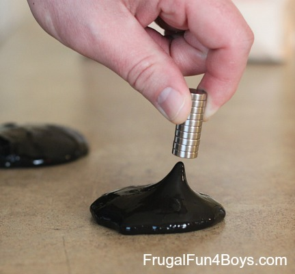
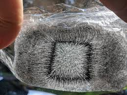
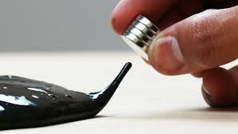

Did you know you can make your slime an extraordinary like magnetic slime? Not just kneading and playing with your hands, you can usa a magnet to play slime! Adding the element of magnet play makes it even more awesome. And this kind of slime does not need any slime activator!

Magnetic slime is just jiggly slime without water so its life span is just the same as the jiggly slime, just a few weeks. And don't forget to store your magnetic slime in a room temperature!
If you want a bigger batch – multiply the recipe below.

Neodymium magnet is used in this kind of slime because a regular magnet won’t be strong enough. The set that we ordered from Amazon is no longer available, but here is something similar: 10 neodymium disc magnets. And here is an option with only 3 magnets, but they are thicker (less likely to chip): 3 neodymium disc magnets. One more – this one is a long cylinder: neodymium cylinder magnet.
